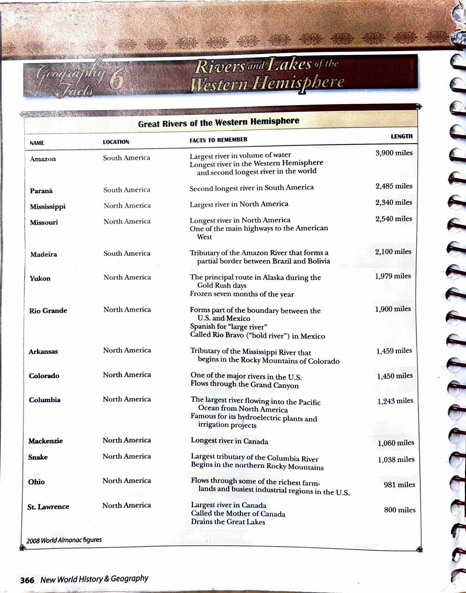
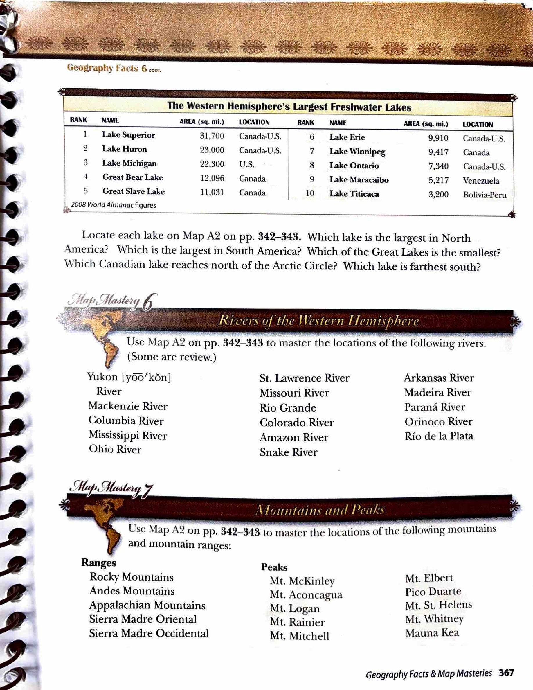

Locate each lake on Map A2 on pp. 342–343. Which lake is the largest in North America? Which is the largest in South America? Which of the Great Lakes is the smallest? Which Canadian lake reaches north of the Arctic Circle? Which lake is farthest south?
Geography Facts 6 · Rivers and Lakes of the Western Hemisphere
Source tables · Pages 366–367
| Name | Location | Facts to remember | Length |
|---|---|---|---|
| Amazon | South America | Largest river in volume of water Longest river in the Western Hemisphere and second longest river in the world | 3,900 miles |
| Paraná | South America | Second longest river in South America | 2,485 miles |
| Mississippi | North America | Largest river in North America | 2,340 miles |
| Missouri | North America | Longest river in North America One of the main highways to the American West | 2,540 miles |
| Madeira | South America | Tributary of the Amazon River that forms a partial border between Brazil and Bolivia | 2,100 miles |
| Yukon | North America | The principal route in Alaska during the Gold Rush days Frozen seven months of the year | 1,979 miles |
| Rio Grande | North America | Forms part of the boundary between the U.S. and Mexico Spanish for “large river” Called Rio Bravo (“bold river”) in Mexico | 1,900 miles |
| Arkansas | North America | Tributary of the Mississippi River that begins in the Rocky Mountains of Colorado | 1,459 miles |
| Colorado | North America | One of the major rivers in the U.S. Flows through the Grand Canyon | 1,450 miles |
| Columbia | North America | The largest river flowing into the Pacific Ocean from North America Famous for its hydroelectric plants and irrigation projects | 1,243 miles |
| Mackenzie | North America | Longest river in Canada | 1,060 miles |
| Snake | North America | Largest tributary of the Columbia River Begins in the northern Rocky Mountains | 1,038 miles |
| Ohio | North America | Flows through some of the richest farmlands and busiest industrial regions in the U.S. | 981 miles |
| St. Lawrence | North America | Largest river in Canada Called the Mother of Canada Drains the Great Lakes | 800 miles |
| Rank | Name | Area (sq. mi.) | Location |
|---|---|---|---|
| 1 | Lake Superior | 31,700 | Canada–U.S. |
| 2 | Lake Huron | 23,000 | Canada–U.S. |
| 3 | Lake Michigan | 22,300 | U.S. |
| 4 | Great Bear Lake | 12,096 | Canada |
| 5 | Great Slave Lake | 11,031 | Canada |
| 6 | Lake Erie | 9,910 | Canada–U.S. |
| 7 | Lake Winnipeg | 9,417 | Canada |
| 8 | Lake Ontario | 7,340 | Canada–U.S. |
| 9 | Lake Maracaibo | 5,217 | Venezuela |
| 10 | Lake Titicaca | 3,200 | Bolivia–Peru |
Map Mastery 6 · Rivers of the Western Hemisphere
Use Map A2 on pp. 342–343 to master the locations of the following rivers. (Some are review.)
Rivers
- Yukon River
- Mackenzie River
- Columbia River
- Mississippi River
- Ohio River
- St. Lawrence River
- Missouri River
- Rio Grande
- Colorado River
- Amazon River
- Snake River
- Arkansas River
- Madeira River
- Paraná River
- Orinoco River
- Río de la Plata
Map Mastery 7 · Mountains and Peaks
Use Map A2 on pp. 342–343 to master the locations of the following mountains and mountain ranges:
Ranges
- Rocky Mountains
- Andes Mountains
- Appalachian Mountains
- Sierra Madre Oriental
- Sierra Madre Occidental
Peaks
- Mt. McKinley
- Mt. Aconcagua
- Mt. Logan
- Mt. Rainier
- Mt. Mitchell
- Mt. Elbert
- Pico Duarte
- Mt. St. Helens
- Mt. Whitney
- Mauna Kea
Comprehension Check · Multiple choice
Questions and choices are adapted for Harlan. Use the source reading, maps and tables to choose your answers.
Original source pages 366–367
Paragraphs, headings and emphasis were compared with the source page images. Pronunciation-guide glyphs remain visible in the source images and are not transcribed into study lists. Photo and diagram captions are excluded from the main reading.
Textbook page 366
Open full-size source page 366
Textbook page 367
Open full-size source page 367